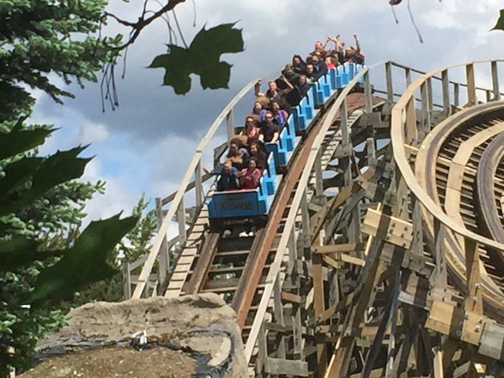

| |
Tremors Review

We're here at Silverwood. Today we're going to review Tremors, the park's bigger wooden coaster and while I am in the minority of prefering the smaller wooden coaster, Timber Terror, I still like Tremors and think it's a really good ride. So let's not waste any more time and hop aboard. Get in the trains, pull down the lap bars, buckle the seatbelts, and we're off!! We roll out of the station, around a small hill, and begin to climb the lifthill. In the middle of the lifthill, we go under a sign that tells us not to stand. And when we reach the top, we go through another sign that tells us yet again to not stand. Clearly, Silverwood is well aware of the fact that most people are morons and need to be reminded of this twice. =) We get a good view of Aftershock from the top, roll around a turn, and down the first drop. It's far from the most intersting first drop, but it's a lot of fun, and it gives us a lot of speed. Plus, then we plunge straight into the ground. TAKE THE TUNNEL!!!! We then break out into daylight, only to TAKE THE TUNNEL!!! AGAIN!!! We then break out of the tunnel, rise up into a small hill, and head down a small curved drop. We seem to be going around a big curve, but going through a small little hill at the same time. There's not really much airtime during this particular hill, but you do get a lot of laterals. The turn continues, the latearls pile on, until we rise up into a hill. We head down a small drop, and fly by a sign. "DANGER! BRIDGE OUT!". Sh*t. Good thing we're on a roller coaster and don't have to worry about that. We head over a small little bunny hop. Hey. There's some decent airtime here. And some really good headchoppers as well. SWEET!!! We head over a tiny little hill, get some airtime, and down another curve, heading into another big sweeping turn. Sweet! Glad to see more laterals coming onto the ride. We curve up, and dip back down. Head over a nice little airtime hill, get some airtime. Up another small hill, a little bit of airtime, and around a turn. Sadly, not nearly as many laterals here. But hey. We dip back down. Back underground we go. TAKE THE TUNNEL!!! We have to pop back out, take another breath of air, before we RETAKE THE TUNNEL!!! We break out once again, and go through another banked turn, giving us more agressive latearls. Awesome. And then it's over. Lame. Tremors is a lot of fun. It kind of reminds me of all the other lateral filled CCIs, such as Legend. Fairly fast, laterals seem to be the bigger thing. Yeah, Tremors does have a little airtime, but not nearly as much as Timber Terror, and this is much more revered for its laterals. A very fun ride and definetly worth a ride if speed and laterals are your thing.
7/10
Location: Silverwood
Opened: 1999
Built by: Custom Coasters
Last Ridden: June 2, 2017
Tremors Photos



|